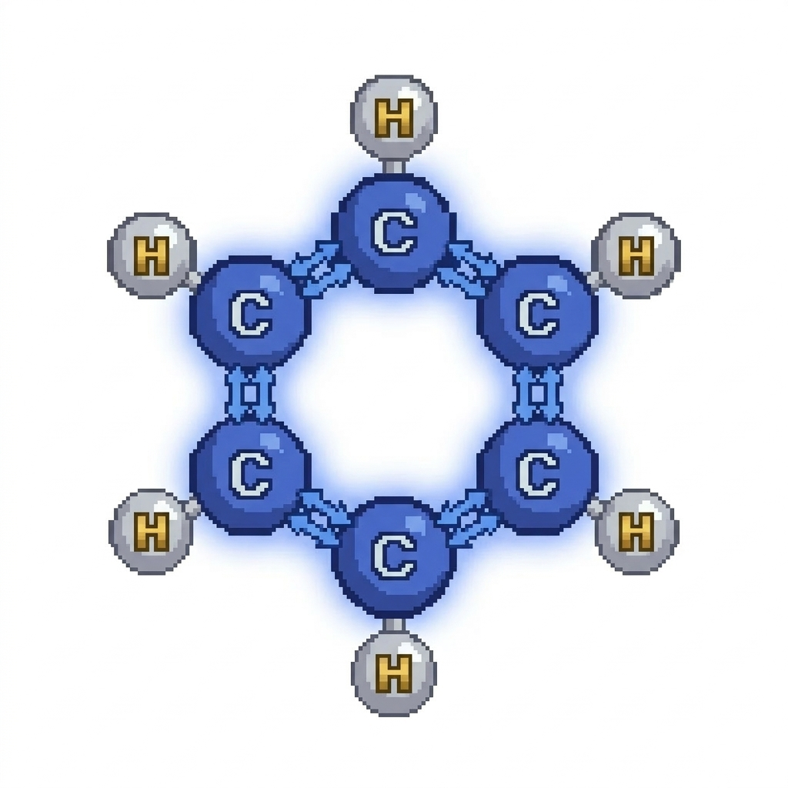
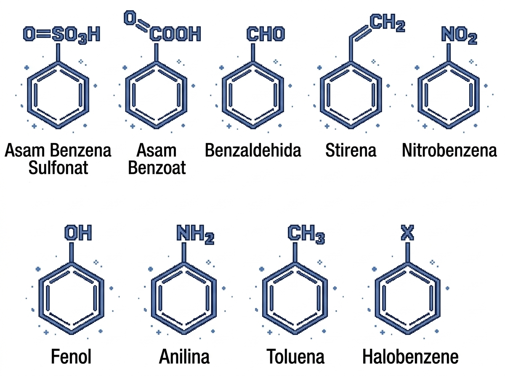
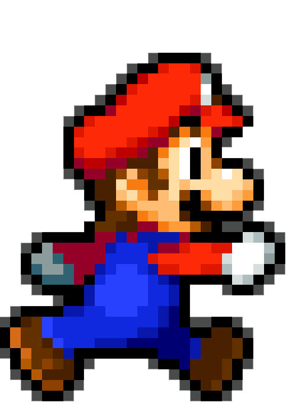

Welcome, Voyager! 👩🏻🔬
📜 Mission Briefing
📚 What Will We Learn?
Benzena dan turunannya, terutama Anilin C6H5NH2. Teman-teman, kalian tahu ga sih kalau ternyata Anilin itu keren banget lohh, dia punya peran besar di berbagai bidang, terutama sebagai pewarna 🎉 keren banget kan?? Warna yang kita lihat sampai hari ini, itu asal usulnya dari Anilin, OMG 😱 Jadi, apakah kalian tertarik buat cari tahu lebih lanjut??
🐾 Mission Tutorial
Untuk melihat lebih banyak informasi tentang Benzena, yuk tekan tombol navigasi di sebelah kiri dan temukan berbagai rahasia tentang Benzena dan turunannya 🤫 Mulai dari level 1 dulu yaa, yuk kita mulai. Selamat menjelajah, Voyagers 🎒
🍄 Level 1: The Beginning of Everything
🛤️ Apa itu Alkana?
🍩 Apa itu Benzena?
🖼️ Struktur Benzena

🐍 Sejarah Singkat
📦 Level 2: Turunan Benzena
KLIK SETIAP CARD UNTUK MELIHAT DETAILNYA
✨ MVP ITEM: 9. ANILIN
❓ For Your Information

🎨 Level 3: The Identity of Color
🎀 Get to Know Anilin
🌈 Kenapa Bisa Berwarna?
🧠 Manusia Melihat Warna
🔮 Jenis Pewarna
- Dyes Zat warna berbentuk cairan atau bubuk yang mudah larut. Contoh: pewarna tekstil, tinta pulpen
- Pigments Berbentuk bubuk yang tidak mudah larut, dan hanya dapat menempel di permukaan dengan bantuan perekat. Contoh: cat air, cat minyak, cat arkrilik, tinta printer
- Alami Berasal langsung dari alam. Contoh: Daun suji, kunyit, buah naga, bunga telang, kopi
- Sintetis Pewarna buatan yang dibuat melalui reaksi kimia. Contoh: Tartazine, indigotin, fast green
- Food Grade Pewarna untuk makanan atau minuman yang telah diuji dan aman
- Reaktif Umumnya digunakan untuk mewarnai kain (kapas atau sutra) karena memiliki ketahanan luntur yang baik
- Kosmetik Pigmen yang digunakan khusus untuk produk kecantikan dan aman di kulit
🌈 Level 4: Color Spectrum Scale
📏 Skala 400-700
🟪 Ultraviolet
🟥 Infrared
KEEP GOING! LET'S GO!

🧪 Level 5: Mixing Lab
🌊 WARNA PRIMER
Warna primer adalah warna dasar (utama) yang tidak dapat dihasilkan melalui pencampuran warna lain. Tiga warna primer utama yaitu merah, kuning, dan biru. Warna primer merupakan fondasi untuk menciptakan warna sekunder dan tersier melalui kombinasi warna tertentu.
RED YELLOW BLUE🫧 WARNA TERSIER
Hasil campuran satu warna primer dengan satu warna sekunder yang kemudian menghasilkan warna-warna yang lebih kompleks.
💡 Tip
👀 Level 6: Theory of Colours
🔍 Rahasia Warna
📺 RGB
🖌️ RYB
🖨️ CMY(K)
💎 Level 7: Pigments & Treasures
PENGGUNAAN & MANFAAT ANILINA DALAM KEHIDUPAN SEHARI-HARI
👕 Industri Tekstil: Legendary Dye
NAVY BLUE DEEP PURPLE
🛞 Industri Karet: Rubber Accelerator
👩🏻⚕️ Bidang Kesehatan: Healer's Potion
🌳 Bidang Pertanian: Nature Protector
🛸 Bidang Aerospace: Rocket Fuel
✨ MISSION UPDATE ✨
Gimana? tenryata banyak banget pemanfaatan Anilin di bidang lain yang nggak terduga ya? Sekarang, kamu telah mengetahui bahwa Anilin tidak hanya berfungsi dan dimanfaatkan sebagai pewarna saja.
🏆 FINAL: THE END OF ADVENTURE
Petualangan kita di ChemzLandz akhirnya telah selesai! Apa saja yang sudah kamu dapatkan disini?:
- 📍 Benzena: Akar dari seluruh pembahasan kita, induk dari berbagai macam senyawa turunannya
- 📍 Turunan Benzena: Benzena itu punya banyak turunan, dan tiap turunan punya manfaatnya sendiri-sendiri
- 📍 Anilin: Superhero kita di berbagai bidang, mulai dari pewarna, kesehatan, aerosoace, dan lainnya. Senyawa kimia yang unexpectedly punya banyak kontribusi untuk kemajuan dunia dan udah kita rasain sendiri manfaatnya
YOU ARE NOW A CHEMISTRY ACE!
⭐ Bonus Stage: Fun Facts!
🎁 BONUS STAGE UNTUK KAMU!
Satu langkah lagi menuju end game. Tenang, kamu ga akan dihadapkan dengan pembelajaran berat kok, stage ini berisi informasi menarik yang mungkin belum pernah kamu ketahui sebelumnya. Enjoy the funfact!
1. Warna Pink Itu Ilusi? 🦄
2. Warna Paling Gelap Sedunia 🕳️
3. Warna Para Bangsawan 👑
4. Kenapa Wortel Warnanya Oranye? 🥕
5. Merah Bikin Laper? 🍟
6. Rahasia Biru Jeans 👖
7. Hewan Berdarah Biru? 🦀
8. Susu Pernah Berwarna Kuning? 🥛
9. Buah Atau Warna? 🍊
10. Warna Kembang Api 🎆
11. Glow in the Dark? 🔋
12. Putih si Social Butterfly? ⚪
13. Warna Paling Cepat Dilihat ⚡
14. Kenapa Daun Itu Hijau? 🍃
15. Manusia dengan Mata Biru? 👁️
👑 YOU WIN! 👑
CONGRATULATIONS!
Kamu telah menyelesaikan seluruh petualangan di ChemzLandz sampai akhir.
Semoga informasi yang kamu dapat disini bisa berguna ya!